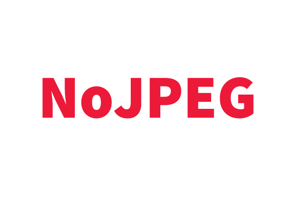
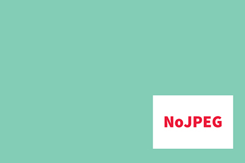
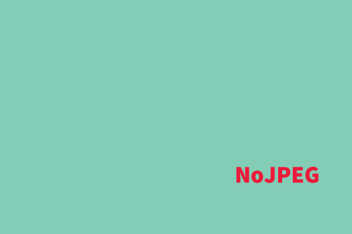
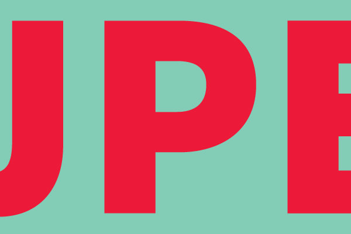
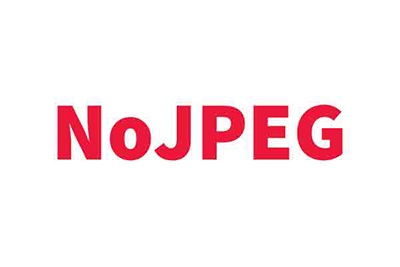
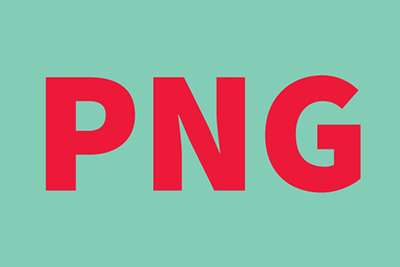
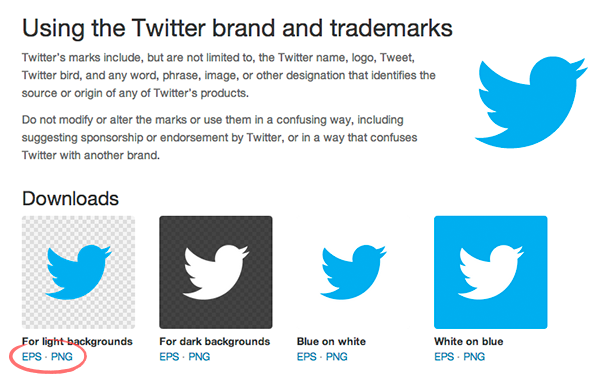

NoJPEG
Neden logonu JPEG olarak kullanmak istemiyorsun.
Veya tasarımcıların neden sürekli EPS dosyası istediğini merak ettin mi?
İlerlemek için → tuşunu veya sağ alttaki küçük mavi oka tıklayabilirsin.
Català, Česky, English, Español, Francais, Galego, Italiano, Nederlands,Português, Português Brasileiro, Русский.
Bir logomuz var...
Ve bu bir JPEG dosyası.
Bu sebeple dâhilî bir beyaz arkaplana sahip.
Pek hoş değil.
Biz beyaz arkaplan istemiyoruz
Peki logomuz renkli bir arkaplanda kullanmak istersek ne olur?
Logomuzun arkasındaki beyaz kısım kaldı.
EPS dosyası kullanırsak ne olur?
Ta-ta! Beyaz arkaplan yok.
Ama bekleyin, dahası var!
Bir JPEG'i genişletirsek ne olur?
Bulanık ve korkunç gözüküyor!
Bir EPS dosyasını genişletirsek ne olur?
Ta-ta! EPS dosyasını sınırsızca genişletebiliriz ve buna rağmen keskin ve canlı kalır.
JPEG kullanımında bir başka sakınca
Çünkü JPEG kayıplı bir dosya türüdür ve eserinizde kalite düşümüne neden olur.
“Ama EPS dosyasını açamıyorum!”
Doğru, EPS profesyonel bir dosya biçimi. Dolayısıyla açamayabilirsiniz.
(Ama emin olun tüm tasarımcı, yayıncı, matbaacı ve web geliştiricisi açabilir)
Peki ne yapıyoruz?
PNG'ye merhaba deyin...
PNG dosyaları. JPEG gibi açabilir, kişisel dosyalarınızda, sunumlarınızda, vb. kullanabilirsiniz.
Ve beyaz arkaplanı yok. Evet!
“Yani iki logo dosyasına ihtiyacım olduğunu mu söylüyorsun?”
Evet.
- Tasarımcılar, yayıncılar, matbaacılar, gibi profesyoneller için bir EPS dosyası
- Kişisel işler, sunumlar, vb. için de PNG dosyası.
İnanmıyor musun?
Twitter’da ne kullanılıyormuş, bir bakalım.
EPS ile PNG. (Biliyorsun, bu adamlar zeki.)
Bu sunumun varsaydığından birazcık daha teknik bir iş
Ama şimdilik dert etmeyin. Logonuzun EPS vektör dosyası ve saydam arkaplanlı PNG dosyası olduğundan emin olun.
İşte bu kadar – İyi eğlenceler!
Diğer düşünmeye değer seçenekler...
SVG ve PDF biçimlerinin her ikisi de etkin biçimde kullanılabilir... ayrıntıları tasarımcı bir arkadaşınıza sorabilirsiniz.
(Word dosyasına JPEG ekleyip PDF olarak kaydetmekten bahsetmiyoruz.)
Katkıda bulunanlar
Bu sunumu sizler için hazırlayan, Larry Hynes.
Yalnızca muazzam Reveal.js ile yapıldı.
no-www.org esin kaynağımız oldu.
@joffley, @bjango, @jescalan, @arnauvp ve Al Haigh’e geribesleme ve tavsiyelerinden ötürü teşekkürler.
Bize GitHub’da yardımcı olmak ister misiniz?